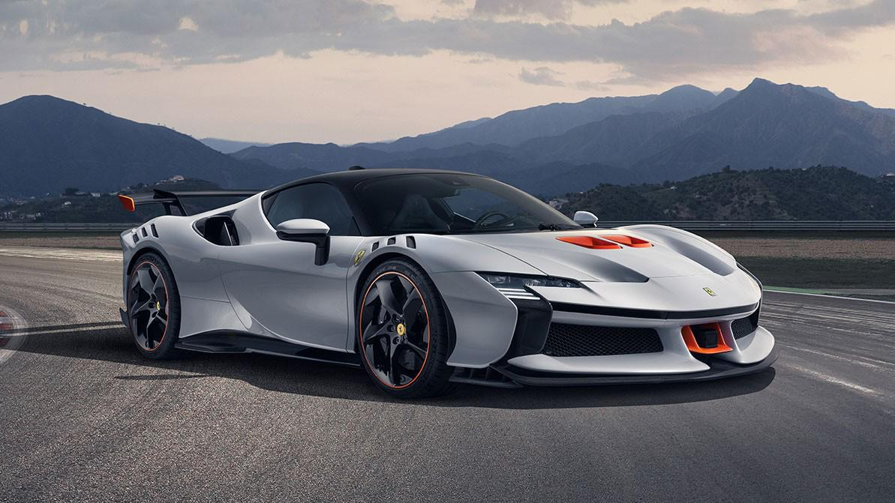

Наши автомобили
Иконы скорости
Ferrari LaFerrari

LaFerrari — гибридный гиперкар с более чем 950 л.с., где V12 встречается с электрическим мотором. Каждая деталь создана для максимальной скорости, контроля и эмоций от вождения. Это не просто суперкар — это слияние технологий, автоспорта и итальянского дизайна.
Ferrari LaFerrari Aperta
.jpg)
Эксклюзивная открытая версия легендарного гиперкара LaFerrari. Сочетает гибридные технологии, мощность более 950 л.с. и невероятный звук V12 без крыши.
Ferrari J50
.jpg)
Лимитированный родстер, выпущенный в честь 50-летия Ferrari в Японии. Объединяет элегантный дизайн, вдохновлённый классическими моделями, и мощный двигатель V8.
Ferrari 488 GTB
.jpg)
сочетание мощности и итальянского стиля. Турбированный V8 на 670 л.с. разгоняет машину с 0 до 100 км/ч за 3 секунды. Продуманная аэродинамика и точное управление делают каждую поездку настоящим драйвом, а интерьер объединяет роскошь и спортивную функциональность..
Ferrari FXXK
.jpg)
Экстремальный трековый гиперкар, созданный для программы Ferrari XX. Оснащён гибридной системой мощностью более 1000 л.с. и предназначен только для гоночных трасс.
Ferrari SF90 Stradale

Современный гибридный суперкар, объединяющий передовые технологии и впечатляющую производительность. SF90 Stradale демонстрирует будущее Ferrari благодаря высокой мощности, полному приводу и инновационной конструкции.
Каждая модель Ferrari — это сочетание мощности, инноваций и уникального дизайна. От легендарных V12 до гибридных гиперкаров — Ferrari постоянно устанавливает новые стандарты в мире суперкаров.